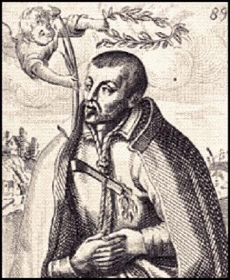

Mučenici iz Engleske i Walesa (10 svetaca)
Svećenik
Sv. Robert Southwell
1561. – 1595.
Engleski isusovac svojim je svećeničkim i pjesničkim darom krijepio progonjene katolike. Pohodio je obitelji i zatvorenike, pisao duhovne tekstove te nakon dugoga zatočeništva podnio mučeništvo na londonskome stratištu Tyburn.

Izvor slike
- Spomendan
- 21. veljače
- Zaštitništvo
- Nije navedeno u izvoru
- Životni vijek
- 1561. – 1595.
- Djelovanje
- Misije i evangelizacija · Pisanje, znanost i umjetnost · Progoni i progonstvo · Mučeništvo
- Razdoblje
- 16. stoljeće
- Rođenje — dostupni podaci
- 1561.; dan i mjesec nisu potvrđeni u provjerenom izvoru.
- Mjesto rođenja
- Horsham St Faith, Norfolk, Engleska
- Datum smrti
- 21.02.1595.
- Mjesto smrti/mučeništva
- Tyburn, London, Engleska
- Okolnosti smrti/mučeništva
- Pogubljen vješanjem i sakaćenjem zbog katoličkoga svećeništva i djelovanja za progona.
- Uloga
- Svećenik
- Mučenik
- Da
- Ostale oznake
- Pjesnik i pisac; svećenik engleske misije
- Pripadnost
- Isusovac
- Drugi oblici imena
- Robert · Robertus Southwell
Životopis
Sveti Robert Southwell bio je engleski isusovac, svećenik i pjesnik koji je služio katolicima u domovini u vrijeme progona. Putovao je među obiteljima koje su ga primale u svoje kuće, podjeljivao sakramente, pohodio zatvorenike i pisao duhovne tekstove. Njegovo svećeništvo i književni dar pripadali su istomu poslanju: pomagati vjernicima da ostanu povezani s Kristom i Crkvom kad je njihov vjerski život bio potisnut u tajnost. Nakon gotovo tri godine zatočeništva pogubljen je u londonskom Tyburnu 21. veljače 1595. Papa Pavao VI. proglasio ga je svetim među Četrdeset mučenika Engleske i Walesa.
Robert se rodio oko 1561. u mjestu Horsham St Faith, u engleskoj grofoviji Norfolk. Potjecao je iz brojne obitelji Richarda Southwella i Bridget, rođene Copley. Njegovo je djetinjstvo proteklo nakon odvajanja Engleske od Rima, u zemlji u kojoj se katolički odgoj sve teže mogao nastaviti u javnim ustanovama. Kao mladić otišao je na europsko kopno. Godine 1576. školovao se u Douaiju, gdje je upoznao isusovački način odgoja i učene ljude poput teologa Leonarda Lessiusa. Kada je ratna nesigurnost prekinula njegov boravak, školovanje je nastavio u Parizu, na Kolegiju Clermont.
U Parizu je na njegov duhovni put utjecao isusovac Thomas Darbyshire. Robert je poželio stupiti u Družbu Isusovu, a nakon povratka u Douai krenuo je prema Rimu. Njegov ulazak u red nije uslijedio odmah: morao je ustrajati u molbi da bude primljen. Godine 1578. ušao je u novicijat pri crkvi Sant’Andrea u Rimu, a 1580. položio je prve zavjete. Slijedili su studij filozofije i teologije te priprava za svećeništvo. Godine 1584. zaređen je u Rimu. U Engleskom kolegiju preuzeo je službu nadstojnika studija, sudjelujući u odgoju budućih svećenika za Englesku.
Kolegij je okupljao mladiće koji su se pripravljali za službu u domovini gdje ih je mogla čekati smrt. Robert je i sam zamolio da ga pošalju na englesku misiju. Godine 1586. krenuo je iz Rima zajedno s Henryjem Garnetom. Povratak nije značio preuzimanje javne župe, crkve i redovitoga rasporeda bogoslužja. Svećenici su morali nalaziti sigurne kuće i putove, oslanjati se na pomoć vjernika i mijenjati boravišta. Southwell je pod tim uvjetima proveo približno šest godina, uglavnom djelujući u Londonu i povremeno odlazeći u druge krajeve.
Služio se lažnim prezimenom Cotton kako bi lakše prikrio svećeničku službu. Primale su ga katoličke obitelji, među njima i obitelj baruna Vauxa. U njihovim se kućama odvijao život Crkve koji nije mogao slobodno izići pred javnost. Southwell je dolazio vjernicima radi sakramenata, pomagao svećenicima koji su upravo pristigli u zemlju i posjećivao zatvore. Takvo je djelovanje zahtijevalo suradnju mnogih ljudi: jednima je trebalo osigurati sklonište, drugima vijest o dolasku svećenika, a zatočenima duhovnu potporu. Njegova misija ovisila je o gostoljubivosti onih koji su zajedno s njim prihvaćali opasnost.
Pomagao je i u radu tajne tiskare povezane s Garnetovim poslanjem. Katekizmi i duhovne knjige omogućavali su pouku i ondje gdje svećenik nije mogao redovito dolaziti. Pisanje je zato bilo dio pastoralne skrbi, uz osobne pohode i podjeljivanje sakramenata. Tekst se mogao čuvati u kući, prepisivati i predavati drugima. Southwell je stvarao i prozu i stihove, obraćajući se ljudima kojima su trebali pouka, ohrabrenje i riječi za molitvu. Njegovi su spisi neko vrijeme kružili u rukopisima, a pojedina su djela izlazila tiskom bez javnoga isticanja njegova imena.
Od 1589. bio je kapelan Anne Howard, grofice od Arundela. Njezin suprug Philip Howard bio je zatočen u londonskom Toweru. Southwell je grofu slao pisma duhovne utjehe, iz kojih je nastala Poslanica utjehe. U njoj se obraćao čovjeku kojemu su bili oduzeti sloboda i obiteljska blizina. Utjeha progonjenima i zatočenima bila je tako konkretan dio njegova svećeničkog rada, a zatim i tema koju je mogao podijeliti sa širim krugom čitatelja. Philip Howard bio je laik; svećenik koji mu je pisao ostao je s njime povezan u povijesti engleskih mučenika.
Godine 1591. objavljeno je Southwellovo prozno djelo o suzama Marije Magdalene. U središtu njegova duhovnog pisanja nalaze se kajanje, Kristova ljubav i ustrajnost u vjeri. Među djelima koja su kružila u rukopisu bila su kratka pravila za dobar kršćanski život i razmatranje o pobjedi nad smrću. Njegova pjesnička Tužaljka svetoga Petra, objavljena ubrzo nakon njegove smrti, razvija temu apostolova kajanja. Pjesnik je tražio riječi kojima se moglo govoriti o grijehu i obraćenju, ali i o Božjoj ljubavi koja čovjeka poziva da se vrati Kristu.
Posebno je poznata njegova pjesma Dijete u ognju, u kojoj se prizor Djeteta Isusa povezuje sa slikom goruće ljubavi. Kristovo rođenje nadahnjivalo je i druge njegove pjesme. Southwell je smatrao da kršćanske teme zaslužuju punu snagu pjesničkoga izraza; nije se zadovoljavao time da religiozna pjesma samo prenese pouku. Njegovi stihovi i duhovna proza bili su čitani i izvan katoličkih krugova. Kasniji su čitatelji i književni istraživači prepoznavali njegove tragove u djelima drugih engleskih pjesnika. Mnogo poslije Benjamin Britten posegnuo je za dvjema njegovim božićnim pjesmama u skladbi A Ceremony of Carols.
Southwellov je misionarski rad prekinut uhićenjem 1592. u kući obitelji Bellamy u blizini Harrowa. Anne Bellamy, članica te obitelji, prethodno je dospjela u ruke vlasti i pod prisilom otkrila podatke koji su pomogli njegovu hvatanju. Robert je zatim prolazio kroz ispitivanja i mučenja te bio zatočen i u Toweru. Podnosio je oskudicu i dugotrajnu odvojenost od ljudi kojima je služio. U zatočeništvu se oslanjao na molitvu i razmatranje. Do njega su dospjeli Sveto pismo, duhovno štivo i brevijar. Književni rad pratio je njegov život i u tom razdoblju.
Godine 1595. izveden je pred sud pod optužbom za veleizdaju. Priznao je da je katolički svećenik, ali je zanijekao sudjelovanje u urotama protiv kraljice i kraljevstva. Objasnio je da se u Englesku vratio radi podjeljivanja sakramenata onima koji ih žele primati u Katoličkoj Crkvi. Sud ga je proglasio krivim i osudio na smrt. Njegovo priznanje svećeništva nije bilo priznanje urote: pred sudom je jasno razlikovao svoje vjersko poslanje od optužbe koja mu se stavljala na teret.
U Tyburnu je 21. veljače 1595. pogubljen vješanjem, nakon čega je njegovo tijelo raščetvoreno. Prije smrti javno je potvrdio da je isusovački svećenik i molio za kraljicu i zemlju. Preporučio je dušu Bogu. U njegovu posljednjem svjedočanstvu nastavilo se ono čemu je služio od povratka u Englesku: pripadnost Kristu, svećenička služba i molitva za ljude među koje je poslan.
Papa Pio XI. proglasio ga je blaženim 1929., a papa Pavao VI. svetim 25. listopada 1970. Njegov je osobni spomendan 21. veljače. U engleskom se kalendaru mučenici zajedno slave 4. svibnja. Southwellova je baština sačuvana i u životu Crkve i u engleskoj književnosti: u uspomeni na svećenika koji je tražio progonjene vjernike te u pjesmama i prozi kojima je govorio o Kristovu rođenju, kajanju i nadi usred nevolje.
Pročitaj više na izvornoj stranici ↗
Molitve i dodatni sadržaji
Misli
Gdje se grijeh izlegao, nek' suze sada gnijezdo operu.Misli svetaca